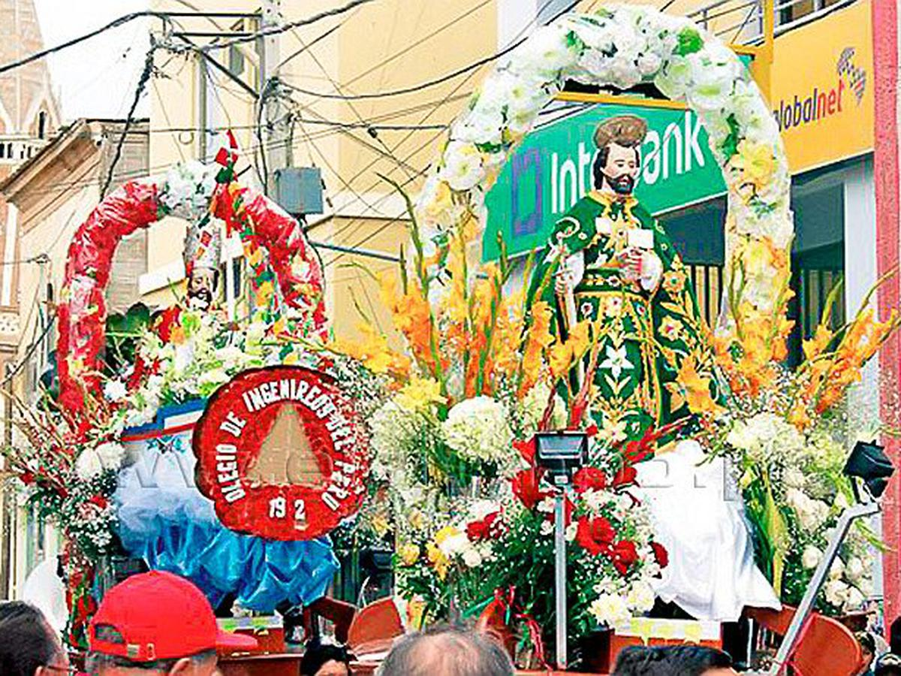
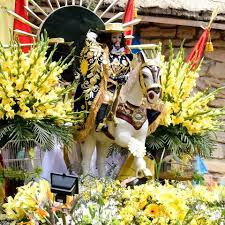
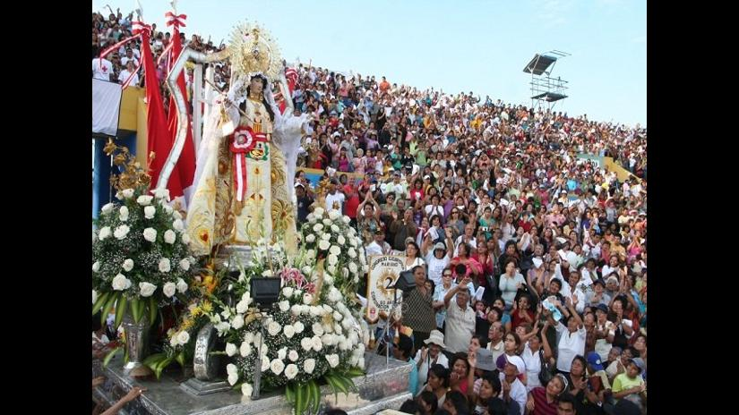

Cada 18 y 19 de junio se celebra la festividad de san Pedro y san Pablo, en honor a la conversión y martirio de los fundadores de la Iglesia. * La Sociedad Apostólica de San Pedro y San Pablo está a cargo de las actividades del día central (29 de junio 
El 24 de julio por la tarde se adorna la imagen, a Felipe Santiago como lo conocen los pobladores de Colán. El Santiago Mayor está en el templo y hay otra figura, la imagen peregrina de él mismo, que pasea de casa en casa durante todo el año. 
Cada 24 de septiembre, la ciudad de Paita, en el departamento de Piura, acoge a miles de peregrinos que llegan desde distintas partes del mundo para conmemorar la festividad de la Virgen de las Mercedes. 